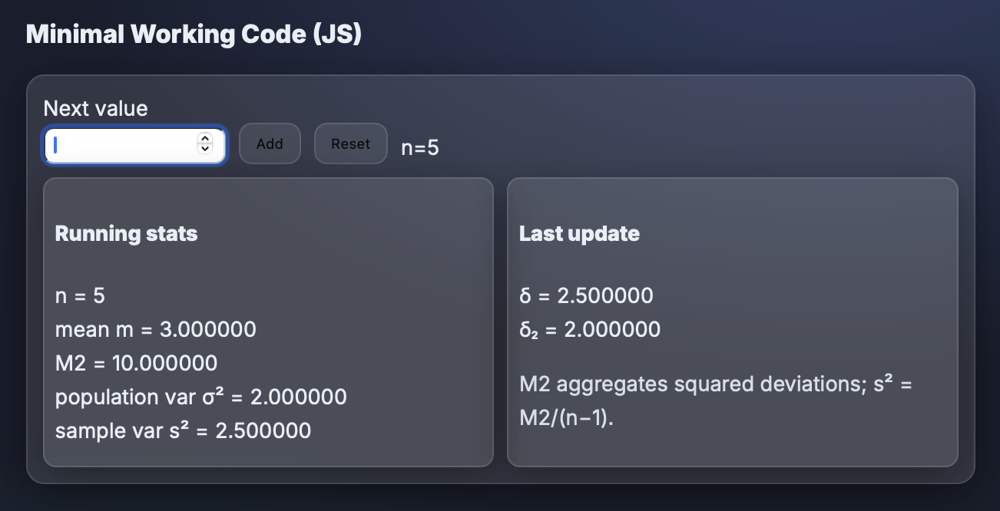
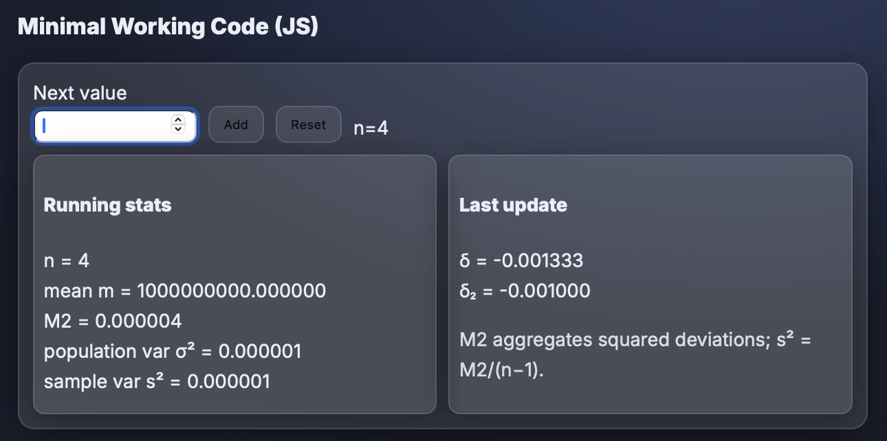

Recurrence Proofs & Online Algorithms for Mean and Variance
Goal
I derive the simplest recurrence relationships for the arithmetic mean and variance, and implement the corresponding online algorithms that update statistics incrementally as new data arrives. Batch recomputation is avoided due to inefficiency and numerical issues.
Derivation
1) Mean (easy)
Let mn−1 be the mean after n−1 samples and xn a new value:
mn = mn−1 + (xn − mn−1)/n
Algebraic rearrangement of the definition of the mean.
2) Variance (numerically stable update)
Define M2 as the running sum of squared deviations:
M2n = Σi=1..n(xi − mn)².
When the new sample xn arrives:
δ = xn − mn−1mn = mn−1 + δ / nδ₂ = xn − mnM2n = M2n−1 + δ · δ₂
Then σ² = M2 / n (population) and s² = M2 / (n−1) (sample, for n ≥ 2).
Minimal Working Code (JS)
Running stats
mean m = —
M2 = —
population var σ² = —
sample var s² = —
Last update
δ₂ = —
M2 aggregates squared deviations; s² = M2/(n−1).
Experimental Results
Test A — Exact sequence [1, 2, 3, 4, 5]
Online reproduces theoretical statistics exactly: mean = 3, σ² = 2, s² = 2.5.

Test B — Numerical-stability stress (1e9 ± 0.001)
With large offsets and tiny deviations, online remains stable: mean ≈ 1e9, σ² ≈ 1×10⁻⁶, s² ≈ 1×10⁻⁶. No catastrophic cancellation observed.

Optional Discussion — Advantages of Online Algorithms
Online updates work with differences relative to the current mean rather than large cumulative sums,
minimizing rounding error and preventing catastrophic cancellation.
They also reduce overflow risk and error propagation, since intermediate values remain small.
Each update is O(1) time and memory, and partial aggregates can be merged (Chan–Golub–LeVeque)
for scalable parallel computation.
References
- Welford’s online mean/variance updates
- Chan, Golub, LeVeque (1979) — Updating formulae & pairwise algorithm
- John D. Cook — Accurately computing running variance